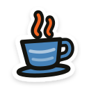

Hi, I'm Ar Razy Fathan Rabbani. For the past four years I've built and shipped mobile apps across Android and iOS at Gamatechno Indonesia and independently.
Most of my work is turning messy requirements into dependable mobile apps — from consumer and enterprise products to cross-platform tools and open-source projects.
Today AI can generate screens and boilerplate in seconds. It still needs someone who can spot when “this will drop frames on a mid-range phone” or quietly break offline. Shipping real mobile apps has trained that instinct for years.
My daily stack centers on Kotlin, Jetpack Compose,

Java, Flutter & Dart, plus TypeScript and JavaScript for web companions and tooling.Whether shipping solo or collaborating closely with designers and backend teams, I care about clean architecture, smooth motion, and apps people genuinely enjoy opening. Want a closer look at my experience and projects? View my resume at cv.arrazyfathan.com.